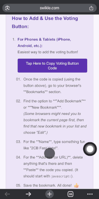

Want to support 2 College Brothers Moving & Storage? The voting for Tampa Bay's best of the best starts May 19th and runs through June 1st. You can vote once per day.
We are nominated for three exciting categories:
Best moving company
Best moving company for out of state moves
Best storage company
Last year, we won Best Storage Company and were a top 3 finalist for the other two categories! This page gives you a special browser button (a "bookmarklet") to help make voting super simple for all three award entries.
Option 1: Use the Voting Button!
Drag this button to your Bookmarks Bar (Desktop users):
(Hint: If your Bookmarks Bar isn't visible, try Ctrl+Shift+B on Windows, or Cmd+Shift+B on a Mac.)
(Mobile users: See "How to Add" instructions below!)
How to Add & Use the Voting Button:
For Phones & Tablets (iPhone, Android, etc.): Adding the voting button is easy!
Copied!
Then, follow these quick steps in your phone's browser (see example below):

Go to your browser's **Bookmarks** section.
Look for an option to **"Add Bookmark"** or **"New Bookmark"**.
(Some browsers might need you to bookmark the current page first, then find that new bookmark in your list and choose "Edit".)
For the **Name**, type something like "2CB Fast Vote!".
For the **Address (or URL)**, clear out any existing text and then **Paste** the code you copied. (It will start with javascript:).
Once the page is loaded, open your bookmarks and tap your new "2CB Fast Vote!" bookmark.
✨ Watch the magic happen! The helper will start navigating and selecting the entries.
(Friendly reminder: If you click it when you're NOT on the voting site, it will take you there first. Just click your bookmark again once the voting page loads!)
The Final Click is Yours: After the helper pops up an "All actions attempted..." message, please glance over your ballot on the voting site to make sure it looks right. Then, you get to click the website's own big "Submit Voting Ballot" button to make your votes count!
Option 2: Vote Manually Step-by-Step 👍
If you prefer to click through yourself, here’s what to vote for:
Select: 2 College Brothers Moving & Storage and add it to your ballot.
Vote #2:
After adding your first vote, you might see a "Continue to..." button for the next category, or you might need to click "Choose New Category" then "Services" again.
Find Sub-Category: Moving Company for Out of State Moves
Select: 2 College Brothers Moving & Storage and add it to your ballot.
Vote #3:
Again, navigate by clicking "Choose New Category" then "Services" (if needed).
Find Sub-Category: Storage Companies
Select: 2 College Brothers Moving & Storage and add it to your ballot.
Once all three are on your ballot, review it carefully and click the website's main "Submit Voting Ballot" button.
Every vote helps!
This little helper makes voting for 2 College Brothers in their three categories a breeze! Remember, it just helps with the selections; you always have the final say by submitting the ballot. Happy voting!